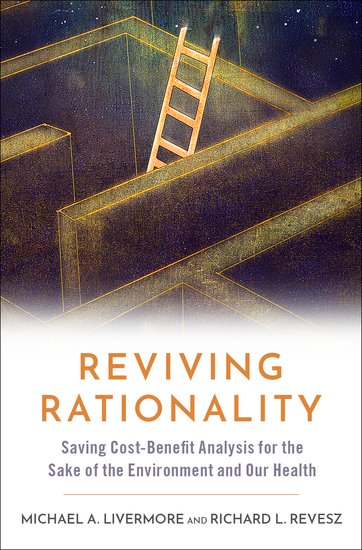
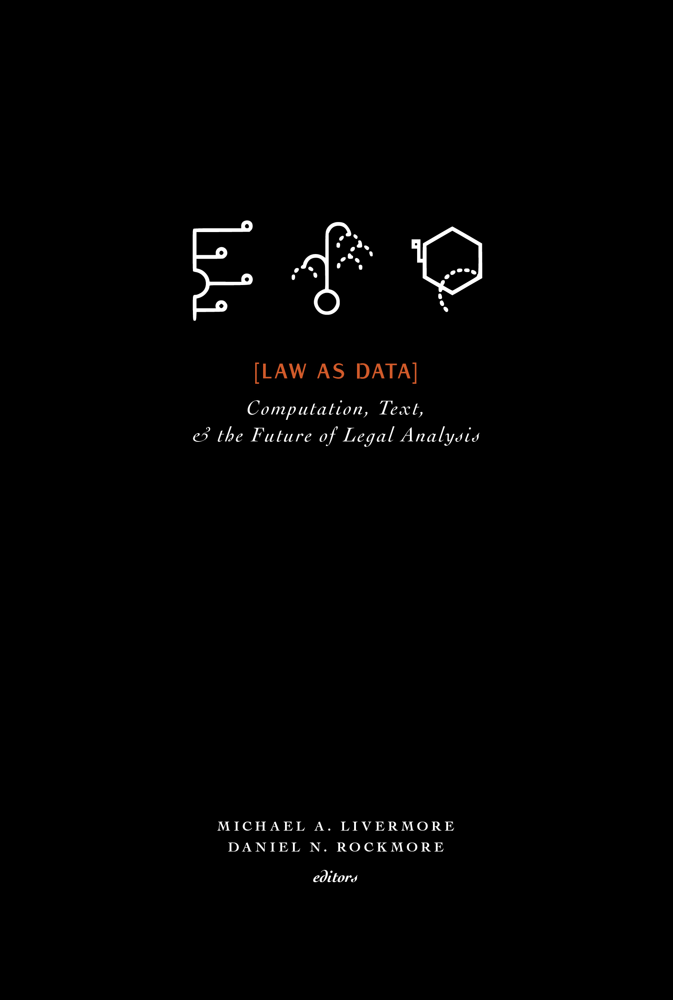
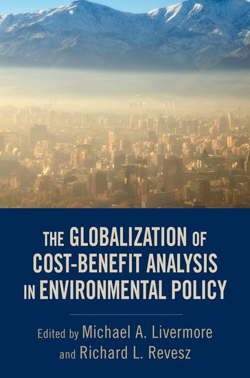
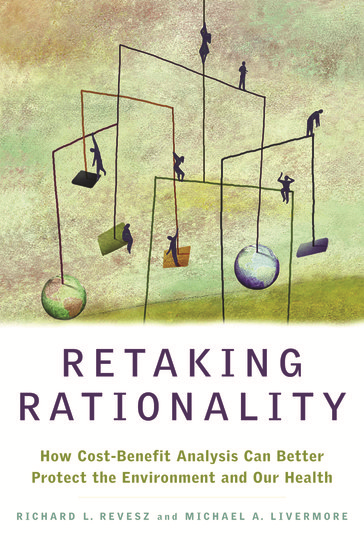

Books
-

Reviving Rationality
Saving Cost-Benefit Analysis for the Sake of the Environment and Our Health
with Richard L. Revesz. Oxford University Press, 2020
For decades, administrations of both parties used cost-benefit analysis to evaluate and improve federal policy on health and the environment. The book traces how the Trump administration undermined that bipartisan practice by sidelining expertise and evidence, with policy incoherence, court defeats, and eroded public confidence as the result, and argues that restoring rigorous analysis is a precondition for effective policy on climate change and public health.
-

Law as Data
Computation, Text, and the Future of Legal Analysis
edited with Daniel N. Rockmore. Santa Fe Institute Press, 2019
The digitization of legal texts, together with advances in statistics, computer science, and data analytics, has opened new approaches to the study of law. This volume treats the text and underlying data of legal documents as the direct objects of quantitative analysis and collects research that breaks methodological ground, whether by bringing computational techniques to traditional legal questions or by pursuing questions that new data makes possible.
-

The Globalization of Cost-Benefit Analysis in Environmental Policy
edited with Richard L. Revesz. Oxford University Press, 2013
Cost-benefit analysis is a standard tool of government in advanced economies, but most developing and emerging nations have yet to build it into their policymaking. Because those countries face the tightest budget constraints, the ability to identify which policies deliver the greatest benefits matters most to them. The volume pairs theory with case studies from the Americas, Africa, the Middle East, and Asia, and takes up the institutional questions of doing this analysis where resources are limited.
-

Retaking Rationality
How Cost-Benefit Analysis Can Better Protect the Environment and Our Health
with Richard L. Revesz. Oxford University Press, 2008
Progressive groups long treated cost-benefit analysis as the enemy of environmental protection and stayed away from the proceedings where it is done, leaving the field to industry. The book argues that economic analysis of regulation is necessary, that it need not conflict with a more compassionate approach to environmental policy, and that a reformed version of the tool can support stronger protections than the alternatives.